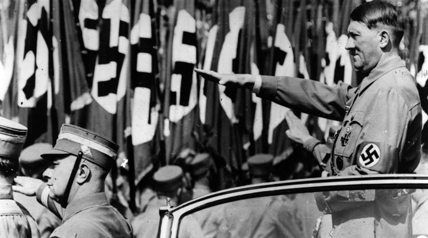
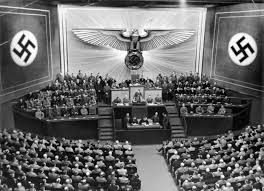

NAZISTERNAS IDEOLOGI
Nationalsocialistiska partiet (Nazistpartiet) var bland annat ett nationalistiskt och rasistiskt parti. Nazism och facism var lika på många sätt, utom den rasistiska delen. Båda ideologierna ansåg att staten låg över individen och fick ta vad den ville. Starka medborgare har rätt att ta från de svagare medborgarna, ifall de inte kunde försvara det. Men nazistpartiet var också extremt antisemitiska. Judar var inte ens människor enligt dem. De talade mycket om den ariska rasen, eller den europeiska rasen, som var över alla andra. "Vit, blond och blå ögd", var det bästa man kunde vara.

Nazisterna framhävde en antidemokratisk världsbild där den staraste individen alltid har rätt. Ledaren skulle känna av vad folket önskade och fatta besluten själv, utan andras åsikter. Andra politiska partier var då förbjudna. Det som nazisterna föraktade mest var socialdemokrater och kommunister. Vilket också ansågs vara styrda av judarna.

Nazisterna var starka motståndare till Versaillesfredens beslut. Återigen skulle Tyskland bli ett starkt och mäktigt land. Det ariska folket hade rätt till "livsrum" och mindre värda folkgrupper skulle lämna ifrån sig mark till den överlägsna rasen.
KVINNORNAS ROLL
Nazisterna var tydliga med sin åsikt om att kvinnornas plats var hemma. Mannen skulle försörja familjen och kvinnan skulle ta hand om hemmet. När nazisterna kom till makten 1933, förbjöds kvinnorna från att arbeta. Gifta kvinnor förlorade sina statliga rättigheter och unga kvinnor fick det svårare att få tillgång till högre utbildning.
Nazismens syn på kvinnor förtryckte dem. Det resonerades att kvinnor inte kunde tänka logiskt och var känslomänniskor. De sågs som fruktbarhetsmaskiner och hade syftet att föda nya starka arbetare och soldater till staten.
ANTISEMITISM - BAKGRUND
Hat mot judar var inget nytt. Långt tillbaka i europeisk historia har judar varit förtryckta. Redan på medeltiden förekom förföljelser av judar. När en tragedi inträffade var det inte ovanligt att landets styrande skyllde på judarna som ansvariga. Men det nya med nazismens syn på judar var att de inte var människor. De ansåg att judarna inte ens hade rätt att leva.
Nästa Sida →